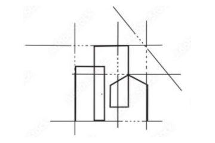

Architecture / interiors / spatial experience
Spatial design as a foundation for product thinking
My architecture work shaped how I think about systems, constraints, hierarchy, material behavior, and the movement of people through complex environments — foundations that continue to influence my product-design work.
What it adds
A way of thinking about people moving through complex environments, both physical and digital.
How to read it
As a foundation for systems thinking, spatial reasoning, hierarchy, constraints, and attention to how people move through designed environments.
Selected architecture and interiors
Compact visual gallery
Projects from earlier architecture and interior-design work. Open any image to browse the gallery with captions.